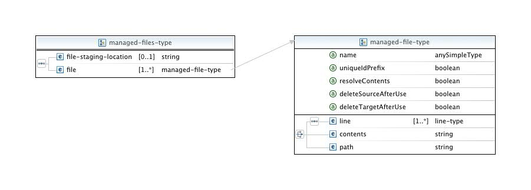

A "managed file" is a file that may be required for the job, but which may not be present on the host on which the job will run. These files may either be external to Eclipse or may be generated from the environment in conjunction with the job submission, but in either case need to be copied to the target system just prior to it.

Managed files are added to the definition in groups determined by
their shared staging location, specified using the file-staging-location element,
which is a path relative to the working
directory of the connection. Managed file properties are as follows:
| Property | Description | Default |
|---|---|---|
| name | A mandatory name for the managed file. | N/A |
| uniqueIdPrefix | Specify that multiple copies of a generated file should be distinguishable. | false |
| resolveContents |
Pass the contents element through the attribute resolver (see below).
|
true |
| deleteSourceAfterUse | Specify that local copies of generated files should be retained. | false |
| deleteTargetAfterUse | Specify that the file should be deleted from the target system after use (not currently implemented in the general case). | false |
Note: The batch script is staged by default to
.eclipsesettings in the user's home directory and deleted after the submit call returns.
However,
it is possible to use the
file-staging-location
on the
script
element to set the batch script path explicitly.
A managed file definition allows one of three possibilities as to specifying content:
| Element | Description |
|---|---|
path |
Specifies the location of an external file, which can be either a hard-coded path or a reference to an attribute value. |
contents |
Specifies the file contents as a string. In this case the resolveContents property is used to indicate whether to pass this string through the attribute resolver, substituting any references to attribute values it may contain. However, this string should not contain "${...}" sequences which do not actually refer to Eclipse variables (such as batch script variables), or the resolution will fail. If resolveContents is set to false, you can still provide this text element with a single reference to an attribute, in which case the value of that attribute will be used as is, without further dereferencing. |
line |
Specifies the file contents using line-type elements.
This is the preferred and most flexible way to represent the
contents of a file to be generated. The line-type type is discussed in more detail
below.
|
When the submit call is executed, managed files are generated if necessary, then their target paths are determined as follows:
path element is used, the target path
becomes staging_directory / name_of_pre-existing_file.content or line elements are
used, the target path becomes staging_directory/
[uniqueIdPrefix]managed-file-name).
Schedulers such as PBS
or LoadLeveler normally use a job script in order to specify the resources
required to launch a job (although they can be configured to work without a batch script.)
Using a script file generally provides the most flexibility in configuring the job submission.
A
script-type
file is just a special
case of the
managed-file-type
type
If the script is specified in the configuration, its path is
automatically added to the list of managed files to be staged to the
appropriate directory (by default .eclipsesettings, or
as indicated by the
file-staging-location
element), so there is no need to include a script entry explicitly
under the
managed-files
element. The following properties are available for scripts:
| Property | Description | Default |
|---|---|---|
| insertEnvironmentAfter | Supplies a line number indicating where in the script to add any extra environment variables set through the Environment tab provided in the launch configuration. This provides control over whether these should overwrite previously defined environment variable values. | -1 (don't insert) |
| deleteAfterSubmit |
Indicates that the script target should not
be retained. Unlike the
managed-file-type, however, the local copy of the generated script is always deleted.
|
true |
A reserved attribute,
managed_file_for_script, is used to reference the script's path on the target
resource in the submit command, e.g.:
<arg>qsub</arg>
<arg>${ptp_rm:managed_file_for_script#value}</arg>
Note: If the
import
tab (see below) is used to provide an
external or workspace edited batch script to the run, nothing extra
need be done in the configuration. The
path for the script is handled automatically.
The line-type is used to explictly specify lines for a script or managed file. Each
line-type
element contains zero or more
arg-type
elements. The text specified by the arg-type elements is placed on a single line, separated by
whitespace. The sequence is terminated by a line separator.
An
arg-type
element is used for script and managed file content as well as in the
definition of commands. Its text element contains the actual argument
string which is passed to the attribute resolver before being written
out. The default behavior of the argument resolver is not to
include arguments whose values are null.
The arg-type type provides the following properties:
| Property | Description | Default |
|---|---|---|
| attribute |
Apply the match to the value of the referenced attribute rather than the content of the element. For example, a boolean attribute could be used to control the inclusion/exclusion of the argument as follows: <arg attribute="useFlags" isUndefinedIfMatches="false">${ptp_rm:flag#value}</arg>
|
"" |
| isUndefinedIfMatches |
Specifies a regular expression that is compared to the argument after resolution. If the regular expression matches, then the argument will be omitted from the result. For instance, if a flag should not appear when the value it precedes is an empty string, one could write: <arg isUndefinedIfMatches="-f">-f
${ptp_rm:flag#value}</arg>
For the purposes of matching, trailing whitespace is trimmed from the resolved argument, so there is no need to specify this as part of the regex used to match. |
"" |
| resolve | Indicates that the text element should be treated as a literal and no attribute resolution performed on the string.. The resolve property must be set to false if the string contains batch-type variables (e.g., ${HOME}) which should be resolved by the remote shell and not inside the Eclipse client. | true |
managed-file paths
@jobId is a special attribute name designating the runtime id for a job instance. In the lifecycle of the run/launch (submit) call, this value begins as an internally generated unique id (uuid) which then is replaced by the real job id after the job has been submitted.
The @jobId attribute, along with the target paths for
managed-file
elements, are not known at configuration time (i.e., before the user
hits "Run"). While the former is made visible to the parsers and the
returned status object of the submit command, neither is in the scope
of (available for reference in) other managed files or the
script
element, because these latter elements are generated just prior to the
actual submission.
If the
script
needs to refer to the @jobId, it must do so via an environment variable
made available by the particular scheduler it is written for. An
example of how to reference the target path of a
managed-file
inside the
script
is included in the tutorial slides. This
essentially involves defining an environment variable in the submission command's
environment, with a reference to the
managed-file
path attribute as its value, and then using this environment variable
inside the
script
.